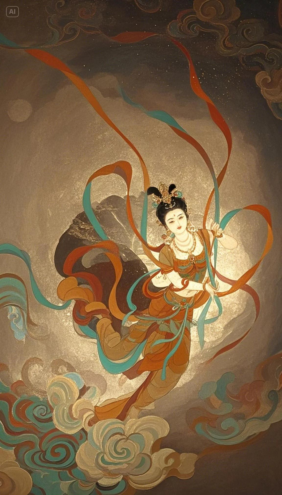
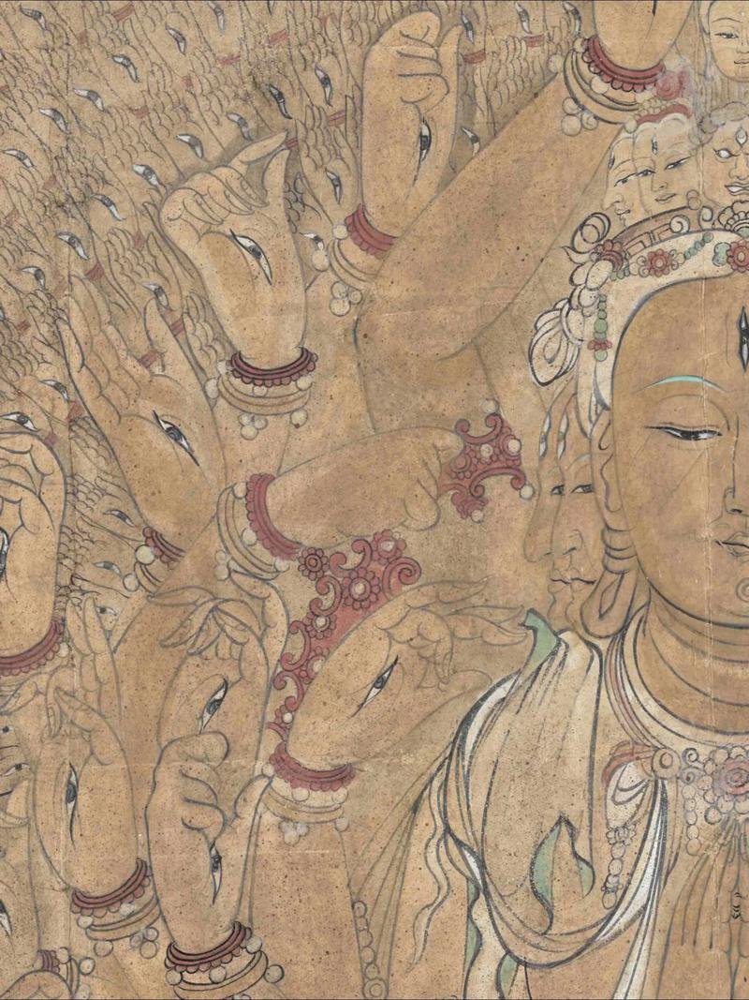

铅白氧化
铅白（碱式碳酸铅）本来是明亮白色，用于人物面部和衣物高光。长期氧化后会发黑，形成今天常见的“黑脸佛”现象。
颜料是石头磨成的粉，所以一千年不太褪色。
敦煌壁画的颜料几乎全部来自天然矿物。这些颜料价格昂贵、制作费时，但有一个巨大的优点：不会褪色。
点击下面色卡，查看该颜色在壁画中的用途。
硫化汞，最贵的红色颜料。色相鲜艳、沉稳，用于佛像的嘴唇、袈裟和重要的装饰线条。辰砂矿主要产自湖南和贵州。
蓝铜矿研磨而成。根据研磨粗细分为头青、二青、三青，颗粒越粗颜色越深。大面积的天空和水面都用石青。
孔雀石研磨而成，和石青是"姊妹色"它们经常出自同一块矿石。用于树木、山石和服饰。
三硫化二砷，有毒。古人用它涂改文书上的错字，所以"信口雌黄"这个成语就是从这里来的。在壁画中用于金色装饰。
氧化铁，最便宜也最常用的颜料。用于人物肤色的底色、山石和土地。几乎每一幅壁画都离不开它。
蛤蜊壳研磨成的白色粉末。用于人物面部的高光和白色衣物。比铅白安全，不会氧化变黑。


有些壁画的颜色和最初画的时候不一样了。
铅白（碱式碳酸铅）本来是明亮白色，用于人物面部和衣物高光。长期氧化后会发黑，形成今天常见的“黑脸佛”现象。
人工银朱与天然朱砂稳定性不同，长期光照后更容易变暗。许多本应鲜亮的红色区域因此显得偏褐偏灰。